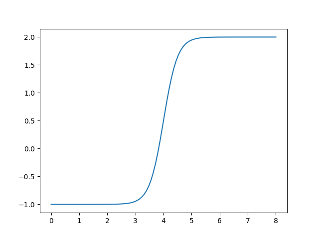

anntools¶
This module implements rudimentary artificial neural network tools required for some models implemented in the HydPy framework.
The relevant models apply some of the neural network features during simulation runs,
which is why we implement these features in the Cython extension module annutils.
Module anntools implements the following members:
ANNMulti-layer feed-forward artificial neural network.
- class hydpy.auxs.anntools.ANN(*, nmb_inputs: int = 1, nmb_neurons: tuple[int, ...] = (1,), nmb_outputs: int = 1, weights_input: Sequence[Sequence[float] | ndarray[tuple[Any, ...], dtype[float64]]] | ndarray[tuple[Any, ...], dtype[float64]] | None = None, weights_output: Sequence[Sequence[float] | ndarray[tuple[Any, ...], dtype[float64]]] | ndarray[tuple[Any, ...], dtype[float64]] | None = None, weights_hidden: Sequence[Sequence[Sequence[float] | ndarray[tuple[Any, ...], dtype[float64]]] | ndarray[tuple[Any, ...], dtype[float64]]] | ndarray[tuple[Any, ...], dtype[float64]] | None = None, intercepts_hidden: Sequence[Sequence[float] | ndarray[tuple[Any, ...], dtype[float64]]] | ndarray[tuple[Any, ...], dtype[float64]] | None = None, intercepts_output: Sequence[float] | ndarray[tuple[Any, ...], dtype[float64]] | None = None, activation: Sequence[Sequence[int] | ndarray[tuple[Any, ...], dtype[int64]]] | ndarray[tuple[Any, ...], dtype[int64]] | None = None)[source]¶
Bases:
InterpAlgorithmMulti-layer feed-forward artificial neural network.
By default, class
ANNuses the logistic function \(f(x) = \frac{1}{1+exp(-x)}\) to calculate the activation of the hidden layer’s neurons. Alternatively, one can select the identity function \(f(x) = x\) or a variant of the logistic function for filtering specific inputs. See propertyactivationfor more information on how to do this.You can select
ANNas the interpolation algorithm used bySimpleInterpolatoror one of the interpolation algorithms used bySeasonalInterpolator. Its original purpose was to define arbitrary continuous relationships between the water stored in a dam and the associated water stage (see modeldam_v001). However, classANNcan also be applied directly for testing purposes, as shown in the following examples.First, define the most simple artificial neural network consisting of only one input node, one hidden neuron, and one output node, and pass arbitrary values for the weights and intercepts:
>>> from hydpy import ANN, nan >>> ann = ANN(nmb_inputs=1, nmb_neurons=(1,), nmb_outputs=1, ... weights_input=4.0, weights_output=3.0, ... intercepts_hidden=-16.0, intercepts_output=-1.0)
The following loop subsequently sets the values 0 to 8 as input values, performs the calculation, and prints out the final output. As to be expected, the results show the shape of the logistic function:
>>> from hydpy import round_ >>> for input_ in range(9): ... ann.inputs[0] = input_ ... ann.calculate_values() ... round_([input_, ann.outputs[0]]) 0, -1.0 1, -0.999982 2, -0.998994 3, -0.946041 4, 0.5 5, 1.946041 6, 1.998994 7, 1.999982 8, 2.0
One can also directly plot the resulting graph:
>>> figure = ann.plot(0.0, 8.0)
You can use the pyplot API of matplotlib to modify the figure or to save it to disk (or print it to the screen, in case the interactive mode of matplotlib is disabled):
>>> from hydpy.core.testtools import save_autofig >>> save_autofig("ANN_plot.png", figure=figure)
- nmb_inputs: BaseProperty[Never, int]¶
The number of input values.
- nmb_outputs: BaseProperty[Never, int]¶
The lastly calculated output values.
- nmb_neurons¶
The number of neurons of the hidden layers.
>>> from hydpy import ANN >>> ann = ANN(nmb_inputs=2, nmb_neurons=(2, 1), nmb_outputs=3) >>> ann.nmb_neurons (2, 1) >>> ann.nmb_neurons = (3,) >>> ann.nmb_neurons (3,) >>> del ann.nmb_neurons >>> ann.nmb_neurons Traceback (most recent call last): ... hydpy.core.exceptiontools.AttributeNotReady: Attribute `nmb_neurons` of object `ann` has not been prepared so far.
- property nmb_weights_input: int¶
The number of input weights.
>>> from hydpy import ANN >>> ann = ANN(nmb_inputs=3, nmb_neurons=(2, 1), nmb_outputs=1) >>> ann.nmb_weights_input 6
- property shape_weights_input: tuple[int, int]¶
The shape of the array containing the input weights.
The first integer value is the number of input nodes; the second integer value is the number of neurons of the first hidden layer:
>>> from hydpy import ANN >>> ann = ANN(nmb_inputs=3, nmb_neurons=(2, 1), nmb_outputs=1) >>> ann.shape_weights_input (3, 2)
- weights_input¶
The weights between all input nodes and neurons of the first hidden layer.
All “weight properties” of class
ANNare usable as explained in-depth for the input weights below.- The input nodes and the neurons vary on the first and second axes of the
2-dimensional array, respectively (see property
shape_weights_input):
>>> from hydpy import ANN, print_matrix >>> ann = ANN(nmb_inputs=2, nmb_neurons=(3,)) >>> print_matrix(ann.weights_input) | 0.0, 0.0, 0.0 | | 0.0, 0.0, 0.0 |
The following error occurs when either the number of input nodes or of hidden neurons is unknown:
>>> del ann.nmb_inputs >>> ann.weights_input Traceback (most recent call last): ... hydpy.core.exceptiontools.AttributeNotReady: Attribute `weights_input` of object `ann` is not usable so far. At least, you have to prepare attribute `nmb_inputs` first. >>> ann.nmb_inputs = 2
It is allowed to set values via slicing:
>>> ann.weights_input[:, 0] = 1. >>> print_matrix(ann.weights_input) | 1.0, 0.0, 0.0 | | 1.0, 0.0, 0.0 |
If possible, property
weights_inputperforms type conversions:>>> ann.weights_input = "2" >>> print_matrix(ann.weights_input) | 2.0, 2.0, 2.0 | | 2.0, 2.0, 2.0 |
One can assign whole matrices directly:
>>> import numpy >>> ann.weights_input = numpy.eye(2, 3) >>> print_matrix(ann.weights_input) | 1.0, 0.0, 0.0 | | 0.0, 1.0, 0.0 |
One can also delete the values contained in the array:
>>> del ann.weights_input >>> print_matrix(ann.weights_input) | 0.0, 0.0, 0.0 | | 0.0, 0.0, 0.0 |
Errors like wrong shapes (or unconvertible inputs) result in error messages:
>>> ann.weights_input = numpy.eye(3) Traceback (most recent call last): ... ValueError: While trying to set the input weights of the artificial neural network `ann` of element `?`, the following error occurred: could not broadcast input array from shape (3,3) into shape (2,3)
- property shape_weights_output: tuple[int, int]¶
The shape of the array containing the output weights.
The first integer value is the number of neurons of the first hidden layer; the second integer value is the number of output nodes:
>>> from hydpy import ANN >>> ann = ANN(nmb_inputs=2, nmb_neurons=(2, 1), nmb_outputs=3) >>> ann.shape_weights_output (1, 3)
- property nmb_weights_output: int¶
The number of output weights.
>>> from hydpy import ANN >>> ann = ANN(nmb_inputs=2, nmb_neurons=(2, 4), nmb_outputs=3) >>> ann.nmb_weights_output 12
- weights_output¶
The weights between all neurons of the last hidden layer and the output nodes.
See the documentation on properties
shape_weights_outputandweights_inputfor further information.
The shape of the array containing the activation of the hidden neurons.
The first integer value is the number of connections between the hidden layers. The second integer value is the maximum number of neurons of all hidden layers feeding information into another hidden layer (all except the last one). Finally, the third integer value is the maximum number of neurons of all hidden layers receiving information from another hidden layer (all except the first one):
>>> from hydpy import ANN >>> ann = ANN(nmb_inputs=6, nmb_neurons=(4, 3, 2), nmb_outputs=6) >>> ann.shape_weights_hidden (2, 4, 3) >>> ann(nmb_inputs=6, nmb_neurons=(4,), nmb_outputs=6) >>> ann.shape_weights_hidden (0, 0, 0)
The number of hidden weights.
>>> from hydpy import ANN >>> ann = ANN(nmb_inputs=2, nmb_neurons=(4, 3, 2), nmb_outputs=3) >>> ann.nmb_weights_hidden 18
The weights between the neurons of the different hidden layers.
See the documentation on properties
shape_weights_hiddenandweights_inputfor further information.
The shape of the array containing the intercepts of neurons of the hidden layers.
The first integer value is the number of hidden layers; the second integer value is the maximum number of neurons of all hidden layers:
>>> from hydpy import ANN >>> ann = ANN(nmb_inputs=6, nmb_neurons=(4, 3, 2), nmb_outputs=6) >>> ann.shape_intercepts_hidden (3, 4)
The number of input intercepts.
The intercepts of all neurons of the hidden layers.
See the documentation on properties
shape_intercepts_hiddenandweights_inputfor further information.
- property shape_intercepts_output: tuple[int]¶
The shape of the array containing the intercepts of neurons of the hidden layers.
The only integer value is the number of output nodes:
>>> from hydpy import ANN >>> ann = ANN(nmb_inputs=2, nmb_neurons=(2, 1), nmb_outputs=3) >>> ann.shape_intercepts_output (3,)
- property nmb_intercepts_output: int¶
The number of output intercepts.
>>> from hydpy import ANN >>> ann = ANN(nmb_inputs=2, nmb_neurons=(2, 1), nmb_outputs=3) >>> ann.nmb_intercepts_output 3
- intercepts_output¶
The intercepts of all output nodes.
See the documentation on properties
shape_intercepts_outputandweights_inputfor further information.
- property shape_activation: tuple[int, int]¶
The shape of the array defining the activation function for each neuron of the hidden layers.
The first integer value is the number of hidden layers; the second integer value is the maximum number of neurons of all hidden layers:
>>> from hydpy import ANN >>> ann = ANN(nmb_inputs=6, nmb_neurons=(4, 3, 2), nmb_outputs=6) >>> ann.shape_activation (3, 4)
- activation¶
Indices for selecting suitable activation functions for the neurons of the hidden layers.
By default,
ANNuses the logistic function for calculating the activation of the neurons of the hidden layers and uses the identity function for the output nodes. However, propertyactivationallows defining other activation functions for the hidden neurons individually. So far, one can select the identity function and a “filter version” of the logistic function as alternatives – others might follow.Assume a neuron receives input \(i_1\) and \(i_2\) from two nodes of the input layer or its upstream hidden layer. We wheight these input values as usual:
\(x_1 = c + w_1 \cdot i_1 + w_2 \cdot i_2\)
When selecting the identity function through setting the index value “0”, the activation of the considered neuron is:
\(a_1 = x_1\)
Using the identity function is helpful for educational examples and for bypassing input through one layer without introducing nonlinearity.
When selecting the logistic function through setting the index value “1”, the activation of the considered neuron is:
\(a_1 = 1-\frac{1}{1+exp(x_1)}\)
The logistic function is a standard function for constructing neural networks. It allows to approximate any relationship within a specific range and accuracy, provided the neural network is large enough.
When selecting the “filter version” of the logistic function through setting the index value “2”, the activation of the considered neuron is:
\(a_1 = 1-\frac{1}{1+exp(x_1)} \cdot i_1\)
“Filter version” means that our neuron now filters the input of the single input node placed at the corresponding position of its layer. This activation function helps force the output of a neural network to be zero but never negative beyond a certain threshold.
Like the main documentation on class
ANN, we now define a relatively complex network to show that the “normal” and the derivative calculations work. This time, we set the activation function explicitly. “1” stands for the logistic function, which we first use for all hidden neurons:>>> from hydpy.auxs.anntools import ANN >>> from hydpy import round_ >>> ann = ANN(nmb_inputs=2, ... nmb_neurons=(2, 2), ... nmb_outputs=2, ... weights_input=[[0.2, -0.1], ... [-1.7, 0.6]], ... weights_hidden=[[[-.5, 1.0], ... [0.4, 2.4]]], ... weights_output=[[0.8, -0.9], ... [0.5, -0.4]], ... intercepts_hidden=[[0.9, 0.0], ... [-0.4, -0.2]], ... intercepts_output=[1.3, -2.0], ... activation=[[1, 1], ... [1, 1]]) >>> ann.inputs = -0.1, 1.3 >>> ann.calculate_values() >>> round_(ann.outputs) 2.074427, -2.734692 >>> for idx_input in range(2): ... ann.calculate_derivatives(idx_input) ... round_(ann.output_derivatives) -0.006199, 0.006571 0.039804, -0.044169
In the next example, we want to apply the identity function for the second neuron of the first hidden layer and the first neuron of the second hidden layer. Therefore, we pass its index value “0” to the corresponding
activationentries:>>> ann.activation = [[1, 0], [0, 1]] >>> ann ANN( nmb_inputs=2, nmb_neurons=(2, 2), nmb_outputs=2, weights_input=[[0.2, -0.1], [-1.7, 0.6]], weights_hidden=[[[-0.5, 1.0], [0.4, 2.4]]], weights_output=[[0.8, -0.9], [0.5, -0.4]], intercepts_hidden=[[0.9, 0.0], [-0.4, -0.2]], intercepts_output=[1.3, -2.0], activation=[[1, 0], [0, 1]], )
The agreement between the analytical and the numerical derivatives gives us confidence everything works fine:
>>> ann.calculate_values() >>> round_(ann.outputs) 1.584373, -2.178468 >>> for idx_input in range(2): ... ann.calculate_derivatives(idx_input) ... round_(ann.output_derivatives) -0.056898, 0.060219 0.369807, -0.394801 >>> d_input = 1e-8 >>> for idx_input in range(2): ... input_ = ann.inputs[idx_input] ... ann.inputs[idx_input] = input_-d_input/2.0 ... ann.calculate_values() ... values0 = ann.outputs.copy() ... ann.inputs[idx_input] = input_+d_input/2.0 ... ann.calculate_values() ... values1 = ann.outputs.copy() ... ann.inputs[idx_input] = input_ ... round_((values1-values0)/d_input) -0.056898, 0.060219 0.369807, -0.394801
Finally, we perform the same check for the “filter version” of the logistic function:
>>> ann.activation = [[1, 2], [2, 1]] >>> ann.calculate_values() >>> round_(ann.outputs) 1.825606, -2.445682 >>> for idx_input in range(2): ... ann.calculate_derivatives(idx_input) ... round_(ann.output_derivatives) 0.009532, -0.011236 -0.001715, 0.02872 >>> d_input = 1e-8 >>> for idx_input in range(2): ... input_ = ann.inputs[idx_input] ... ann.inputs[idx_input] = input_-d_input/2.0 ... ann.calculate_values() ... values0 = ann.outputs.copy() ... ann.inputs[idx_input] = input_+d_input/2.0 ... ann.calculate_values() ... values1 = ann.outputs.copy() ... ann.inputs[idx_input] = input_ ... round_((values1-values0)/d_input) 0.009532, -0.011236 -0.001715, 0.02872
- property shape_inputs: tuple[int]¶
The shape of the array containing the input values.
The only integer value is the number of input nodes:
>>> from hydpy import ANN >>> ann = ANN(nmb_inputs=5, nmb_neurons=(2, 1), nmb_outputs=2) >>> ann.shape_inputs (5,)
- property shape_outputs: tuple[int]¶
The shape of the array containing the output values.
The only integer value is the number of output nodes:
>>> from hydpy import ANN >>> ann = ANN(nmb_inputs=2, nmb_neurons=(2, 1), nmb_outputs=6) >>> ann.shape_outputs (6,)
- outputs: BaseProperty[Never, ndarray[tuple[Any, ...], dtype[float64]]]¶
The lastly calculated output values.
- property shape_output_derivatives: tuple[int]¶
The shape of the array containing the output derivatives.
The only integer value is the number of output nodes:
>>> from hydpy import ANN >>> ann = ANN(nmb_inputs=2, nmb_neurons=(2, 1), nmb_outputs=6) >>> ann.shape_output_derivatives (6,)
- output_derivatives: BaseProperty[Never, ndarray[tuple[Any, ...], dtype[float64]]]¶
The lastly calculated first-order derivatives.
- nmb_layers¶
The number of hidden layers.
>>> from hydpy import ANN >>> ann = ANN(nmb_inputs=2, nmb_neurons=(2, 1), nmb_outputs=3) >>> ann.nmb_layers 2
- shape_neurons¶
The shape of the array containing the activations of the neurons of the hidden layers.
The first integer value is the number of hidden layers; the second integer value is the maximum number of neurons of all hidden layers:
>>> from hydpy import ANN >>> ann = ANN(nmb_inputs=2, nmb_neurons=(4, 3, 2), nmb_outputs=6) >>> ann.shape_neurons (3, 4)
- neurons¶
The activation of the neurons of the hidden layers.
See the documentation on properties
shape_neuronsandweights_inputfor further information.
- shape_neuron_derivatives¶
The shape of the array containing the derivatives of the activities of the neurons of the hidden layers.
The first integer value is the number of hidden layers; the second integer value is the maximum number of neurons of all hidden layers:
>>> from hydpy import ANN >>> ann = ANN(nmb_inputs=2, nmb_neurons=(4, 3, 2), nmb_outputs=6) >>> ann.shape_neuron_derivatives (3, 4)
- neuron_derivatives¶
The derivatives of the activation of the neurons of the hidden layers.
See the documentation on properties
shape_neuron_derivativesandweights_inputfor further information.
- calculate_values() None[source]¶
Calculate the network output values based on the input values defined previously.
For more information, see the documentation on class
ANN.
- calculate_derivatives(idx: int, /) None[source]¶
Calculate the derivatives of the network output values with respect to the input value of the given index.
For more information, see the documentation on class
ANN.
- property nmb_weights: int¶
The number of all input, inner, and output weights.
>>> from hydpy import ANN >>> ann = ANN(nmb_inputs=1, nmb_neurons=(2, 3), nmb_outputs=4) >>> ann.nmb_weights 20
- property nmb_intercepts: int¶
The number of all inner and output intercepts.
>>> from hydpy import ANN >>> ann = ANN(nmb_inputs=1, nmb_neurons=(2, 3), nmb_outputs=4) >>> ann.nmb_intercepts 9
- property nmb_parameters: int¶
The sum of
nmb_weightsandnmb_intercepts.>>> from hydpy import ANN >>> ann = ANN(nmb_inputs=1, nmb_neurons=(2, 3), nmb_outputs=4) >>> ann.nmb_parameters 29
- verify() None[source]¶
Raise a
RuntimeErrorif the network’s shape is not defined completely.>>> from hydpy import ANN >>> ann = ANN() >>> del ann.nmb_inputs >>> ann.verify() Traceback (most recent call last): ... RuntimeError: The shape of the the artificial neural network parameter `ann` of element `?` is not properly defined.